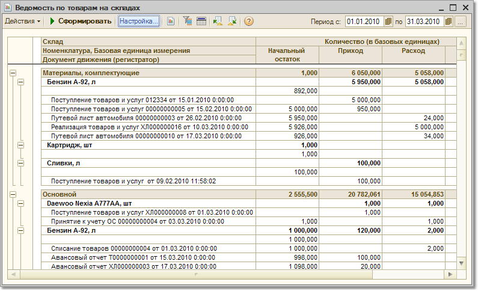

В отчете "Ведомость по товарам на складах" анализируются обороты по товарам в количественном выражении.
Отчет может быть выведен как в базовых единицах, в единицах хранения остатков товаров и в единицах для отчетов, назначенных для товаров в справочнике "Номенклатура".
С помощью данного отчета можно получить график поступления и отгрузки товаров со складов предприятия с любой периодичностью, например за каждый день в течение определенного периода времени. Для этого в группировках отчета необходимо установить соответствующий порядок группировки: По дням, По неделям и т.д.
В том случае, если необходимо детализировать приход товаров по документам, то нужно на закладке "Поля" выбрать "Документ движения (регистратор)".
Причем в отчет можно вывести информацию не только о самом документе, но и о любом реквизите документа. Например, в отчет можно дополнительно вывести информацию об ответственном сотруднике, оформившем этот документ.
В отчете можно произвести отбор данных по различным параметрам: по группе товаров, по произвольному списку товаров, по складам и т.д.
Отчет может быть построен в разрезе серий и характеристик товаров.
